sriraam@github ~ $ whoami
 |  |
sriraam@github ~ $ ./contributions.sh
sriraam@github ~ $ ./links.sh
AI / Data Science · Full Stack · AI Builder
Local preview — the published README uses the same self-hosted SVG assets.